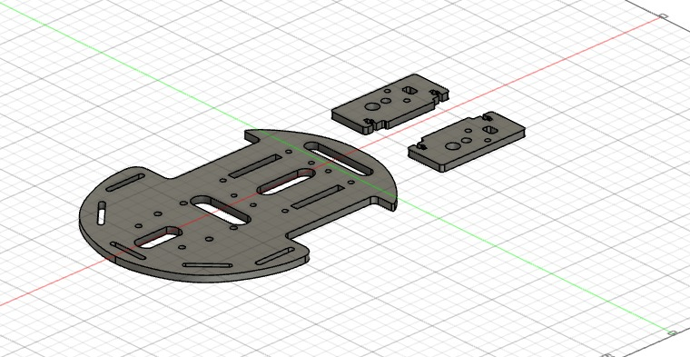
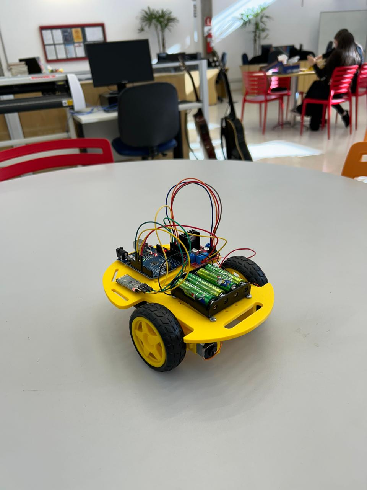
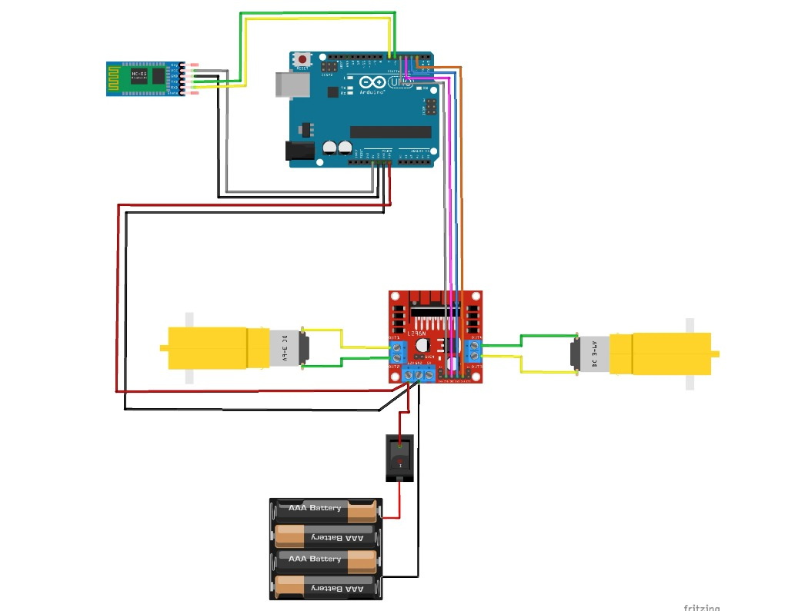

Introdução ao projeto
Estamos embarcando neste projeto com o intuito de criar um carrinho arduino sendo capaz
de ser controlado com um dispositivo bluetooth (HC-05), queremos ter como aprendizado e melhorias, o
trabalho em equipe, a organização, nossas habilidades de programação HTML, CSS e Arduino e a montagem de um
carrinho.
Sprint 1
Na spint 1 nosso grupo fez os requisitos e funcionais e não funcionais e
decidimos como ia ser o modelo do nosso chassi e fizemos uma documentação escrita

Sprint 2
Na sprit 2 nosso grupo fez toda uma documentação escrita dessa sprint, a gente
listou a lista de componentes, explicação do SO do arduino fluxograma, iniciamos os códigos como por
exemplo o arduino e tivemos o inicio do HTML e CSS para nosso site.
Sprint 3
Na sprint 3 terminamos o site e após a impressão 3D do chassi e da garra iniciamos a montagem do
carrinho colocando as sua respectivas peças em seu lugar, fizemos um vídeo demonstrativo
do nosso carrinho funcionando e fizemos uma documentação completa.
Sprint 4
Na última Sprint após o termino da montagem do carrinho começamos a fazer os testes para ver se ele estava
funcionando, após todos os testes por mais que ocorreu alguns problemas o carrinho estava funcionando
normalmente, em seguida fizemos um feedback sobre o projeto e a entrega do relatório final.

terminamos os slides, fizemos um feedback sobre todo projeto, sobre as nossas metas terem sido alcançadas.
Como os dispositivos estão conectados
Os dispositivos se comunicam entre si por meio de cabos jumper (macho e fêmea)
